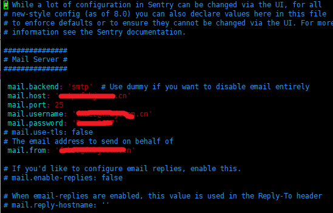
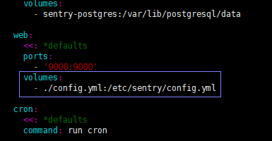
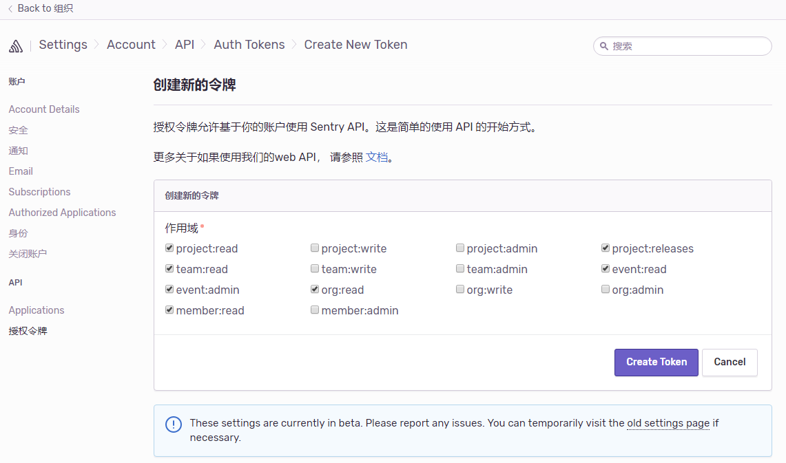
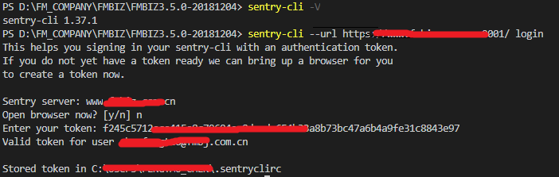

Sentry监控入门
Docker内部部署：
https://docs.sentry.io/server/installation/docker/
https://docs.sentry.io/server/
官方docker运行Sentry引导程序onpremise
参考：
前端异常监控之 Sentry的部署和使用
搭建私有的前端监控服务: sentry
sentry使用实践
Sentry环境
Docker安装要求：
1 | Docker 1.10.0+ |
安装环境
1 | ubuntu 16.04.2 |
配置SSL
使用Nginx转发
配置邮件系统
1、修改config.yml配置文件

2、修改docker-compose.yml文件

然后重启镜像
sudo docker-compose stop // 停止镜像
sudo docker-compose up -d // 运行镜像
使用文档
Node.js https://docs.sentry.io/clients/node/usage/
Android https://docs.sentry.io/clients/java/modules/android/
angularjs https://docs.sentry.io/clients/javascript/integrations/angularjs/
Java https://docs.sentry.io/clients/java/migration/
使用Sentry-cli 上传sourcemap https://docs.sentry.io/cli/configuration/
创建令牌

安装Sentry-CLI
官方文档：https://docs.sentry.io/cli/installation/
使用npm安装：
1 | npm install @sentry/cli |
安装完成查看版本：
1 | sentry-cli -V |
配置和身份验证
对于大多数功能需要进行身份验证，通过sentry-cli 的login命令来完成，默认情况下，连接到的是Sentry的SaaS平台地址sentry.io,这里使用本地搭建的服务地址：
1 | sentry login // 默认命令，url是 sentry.io |
添加 --url 参数配置sentry登录服务器地址：
1 | sentry --url https://www.xxxx.com login |
根据提示，如果已经生成了token，根据提示输入token即可

.sentryclirc 文件为生成的配置文件，设置了server地址和token
发布管理 https://docs.sentry.io/cli/releases/#creating-deploys
创建版本
创建一个release
1 | sentry-cli releases -o [组织名称] -p [项目名称] new [release名称] |
本地应用，在Raven的config中添加对应的release，指定版本后，每次上报到会分类到该版本下：
1 | Raven.config('https://2514ce9dc9d841c9922347233a71beaa@www.fmbiz.com.cn:9001/2'，{ |
删除release命令:
1 | sentry-cli releases -o [组织名称] -p [项目名称] delete [release名称] |
注：删除某个release时需要将其下的异常处理掉,并将该版本的sourcemap文件清空,完成上面两步可能还要等待2小时才能删除，不然会报错：该版本还有其它依赖。
示例：
1 | sentry-cli releases -o fanmi -p fmbiz-web new fmbiz@3.5.0 |
成功的输出信息：Created release fmbiz@3.5.0.
Raven配置：
1 | Raven.config('https://2514ce9dc9d841c9922347233a71beaa@www.fmbiz.com.cn:9001/2'，{ |
sourceMap管理
上传SourceMap
1 | sentry-cli releases -o [组织] -p [项目] files [staging@1.0.1] upload-sourcemaps [map文件所在目录] --url-prefix [线上资源URI] |
示例：
1 | sentry-cli releases -o fanmi -p fmbiz-web files fmbiz@3.5.0 upload-sourcemaps test/sourcemaps --url-prefix '~/' |
删除SourceMap：
1 | sentry-cli releases -o [组织] -p [项目] files staging@1.0.1 delete --all |
参考：
https://docs.sentry.io/workflow/releases/?platform=javascript#create-deploy
https://docs.sentry.io/cli/releases/#upload-files
https://segmentfault.com/a/1190000014683598#articleHeader1
https://segmentfault.com/a/1190000012051620